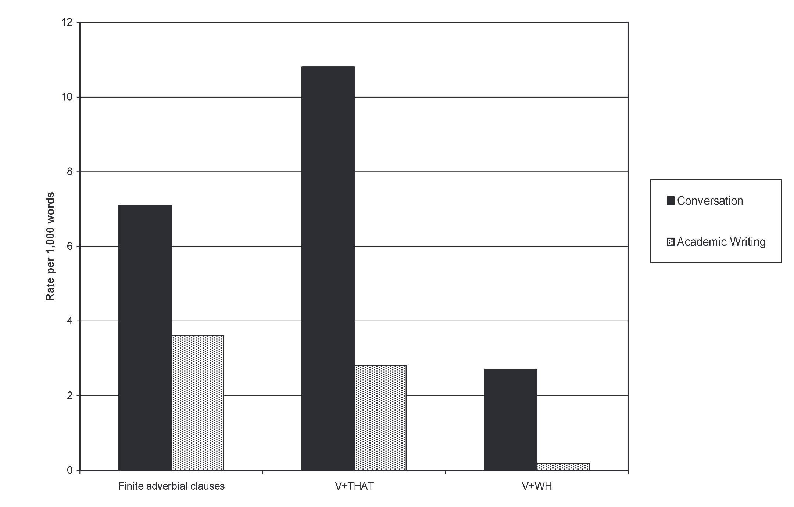
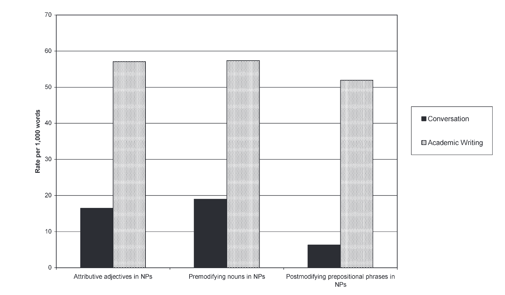
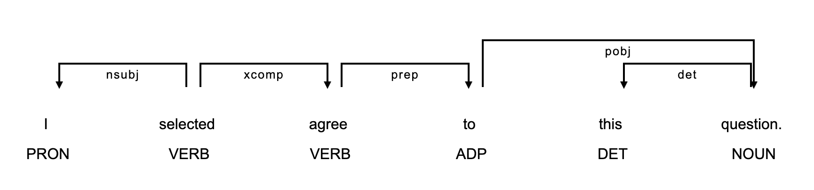
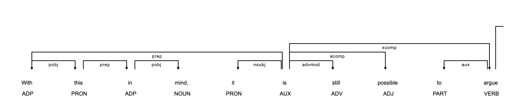
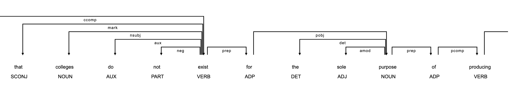

| Corpus Lab | Content | Due |
|---|---|---|
| Corpus Lab 1 | Basic Concordancing | Finished |
| Corpus Lab 2 | Lexical diversity, Lexical Sophistication | Finished |
| Corpus Lab 3 | Mini-search | 8/8 (Friday) |
| Corpus Lab 4 | Fine-grained syntactic complexity | 8/12 (Tuesday) |
The final submission of all the four Corpus lab is on 18th.
By the end of this session, students will be able to:
- Provide historical overview of the syntactic complexity research
- Describe different approaches to grammatical features:
- Syntactic complexity strand
- Fine-grained syntactic complexity strand
- Descriptive (register-based analysis) strand
- Verb Argument Construction (VAC) strand
- Understand current trends of syntactic complexity research
In much SLA research, syntactic complexity has been used.
Syntactic complexity measures are categorized into:
lengths of productionSentence complexitySubordinationCoordinationParticular structuresBut before talking about each, we need to define units we use.
Unit of analysis is a terminology to indicate at which level you will conduct your analysis
2 T-units: [The researcher loves vocabulary too much] [and he loves coffee too.]
1 T-units: [The researcher loves vocabulary and coffee too much because they have much in common.]I completed my assignment early, so I helped my friend review his draft, and we both felt more confident about our work.
| Type | Measure | Code | Score |
|---|---|---|---|
| Lengths | Mean length of clause | MLC | (5+8+9) / 3 = 7.333 |
| Lengths | Mean length of sentence | MLS | 22 /1 = 22 |
| Lengths | Mean lengths of T-unit | MLT | (5+8+9) / 3 = 7.333 |
| Sentence | Clause per sentence | C/S | 3 / 1 = 3 |
Because I was tired, I decided to take a break and watch a movie.
| Type | Measure | Code | Score | |
|---|---|---|---|---|
| Subordination | Clauses per T-unit | C/T | 2 / 1 = 2 | |
| Subordination | Complex T-units per T-unit | CT/T | 1/1 = 1 | |
| Subordination | Dependent clauses per clause | DC/C | 1/2 = 0.5 | |
| Subordination | Dependent clauses per T-unit | DC/T | 1/1 = 1 | |
| Coordination | Coordinate phrases per clause | CP/C | 1/2 = 0.5 | |
| Coordination | Coordinate phrases per T-unit | CP/T | 1/1 = 1 | |
| Coordination | T-units per sentence | T/S | 1/1 = 1 |
Some complexity measures are at phrasal levels.
| Type | Measure | Code |
|---|---|---|
| Phrasal | Complex nominals per clause | CN/C |
| Phrasal | Complex nominals per T-unit | CN/T |
| Phrasal | Verb phrases per T-unit | VP/T |


Example from conversation
Example from academic paper
Criticism on the (largely) length-based grammatical complexity:
Example from Kyle & Crossley (2018)
dependency parsing to identify fine-grained features of grammar.The followings are example:
| Structure | Dependency tag | Example of Structure |
|---|---|---|
| Nominal subject | nsubj |
The athlete ran quickly. |
| Direct object | dobj |
He plays soccer. |
| Indirect object | iobj |
He teaches me soccer. |
| Clausal complement | ccomp |
I am certain that he did it. |
| Adjectival complement | acomp |
He looks fine. |
| Nominal complement | ncomp |
She is a teacher. |
The followings are example:
| Structure | Abbreviation | Example of Structure |
|---|---|---|
| Adverbial modifier | advmod |
Accordingly, I ate pizza. |
| Prepositional modifier | prep |
They went into the score. |
| Temporal modifier | tmod |
Last night, we had fun. |
| Adverbial clause | advcl |
The accident happened as night fell. |
| Open clausal complement | xcomp |
I am ready to leave. |
nsubj, nsubj_pass, agent, ncomp, dobj, iobj, pobj.| Structure | Abbreviation | Example of Structure |
|---|---|---|
| Determiners | det |
The man went into the store. |
| Prepositional phrases | prep |
the man in the red hat. |
| Adjective modifier | amod |
The man in the red hat |
| Possessives | poss |
Tom’s store; his intention |
| Relative clause modifiers | recmod |
the plan I thought |
| Adverbial modifiers | advmod |
It’s a really good idea. |
Final regression model



| Large Category | List of features |
|---|---|
| Pronouns and Proverbs | First person, Second person, Pronoun it, Proverb do |
| Reduced Forms | contractions, complementizer that-deletion |
| Prepositional phrases | All prepositional phrases |
| Nouns and noun types | Concrete noun, Cognitive noun, place noun, group noun, etc. |
| Verbs and verb types | tense aspect, modal verbs, mental verbs, causative verb, etc. |
| complement clauses | that complement, wh-complement |
| Nominal Postmodifying clauses | That relative clauses, wh-relative clauses |
According to construction grammar (Goldberg, 1995, 2006), grammatical construction (structure) convey abstract linguistic meaning.
| Construction | Syntactic Frame | Semantic Frame | Examples |
|---|---|---|---|
| transitive | nsubj-root-dobj |
agent-V-theme | He loves coffee and skill acquisition theory. |
| ditransitive | nsubj-root-iobj-dobj |
agent-V-recipient-theme | I teach you NLP. |
| caused motion | nsubj-root-dobj-obl |
agent-V-theme-destination | Pat sneezed the foam off the cappuccino. |
| resultative | nsubj-root-dobj-xcomp |
agent-V-theme-result | She kissed him unconscious. |
main verb and syntactic frame.VAC example
| Main verb lemma | Verb Argument Construction | Example | Freq (PMW) in COCA |
|---|---|---|---|
| be | subject-verb-nominal complement | It is an indication of the ways… | 34,517.41 |
| say | subject – verb - clausal complement | He said [that health decisions should be made by patients and doctors] | 3865.16 |
| refuse | subject - verb - xcomp | He refused to brew a coffee to me. | 5540.0 |
| suppose | nsubj-v-ccomp | I suppose that the theory might be wrong. | 3016.0 |
| suppose |
Linguistic Data Analysis I